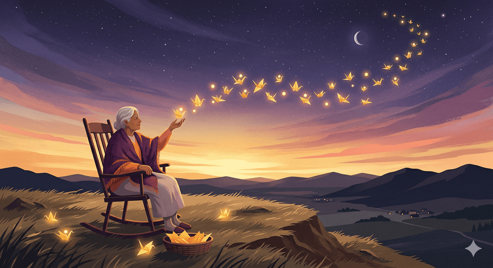

It’s my birthday. I’m 68. I feel like pulling up a rocking chair and dispensing advice to the young ‘uns. Here are 68 pithy bits of unsolicited advice which I offer as my birthday present to all of you. (Hôm nay là sinh nhật của tôi. Tôi 68 tuổi. Tôi muốn kéo một chiếc ghế bập bênh và đưa ra lời khuyên cho những người trẻ tuổi. Sau đây là 68 lời khuyên ngắn gọn không được yêu cầu mà tôi dành tặng như một món quà sinh nhật cho tất cả các bạn.)
Học hỏi, lắng nghe và nền tảng cuộc sống
- Learn how to learn from those you disagree with, or even offend you. See if you can find the truth in what they believe. (Học cách học hỏi từ những người bạn không đồng tình hoặc thậm chí xúc phạm bạn. Xem liệu bạn có thể tìm ra sự thật trong những gì họ tin tưởng không.)
- Being enthusiastic is worth 25 IQ points. (Sự nhiệt tình đáng giá 25 điểm IQ.)
- Always demand a deadline. A deadline weeds out the extraneous and the ordinary. It prevents you from trying to make it perfect, so you have to make it different. Different is better. (Luôn yêu cầu thời hạn. Thời hạn sẽ loại bỏ những thứ không cần thiết và bình thường. Nó ngăn cản bạn cố gắng làm cho nó hoàn hảo, vì vậy bạn phải làm cho nó khác biệt. Khác biệt thì tốt hơn.)
- Don’t be afraid to ask a question that may sound stupid because 99% of the time everyone else is thinking of the same question and is too embarrassed to ask it. (Đừng ngại hỏi một câu hỏi có vẻ ngớ ngẩn vì 99% thời gian mọi người đều nghĩ đến câu hỏi tương tự và quá xấu hổ để hỏi.)
- Being able to listen well is a superpower. While listening to someone you love keep asking them “Is there more?”, until there is no more. (Có khả năng lắng nghe tốt là một siêu năng lực. Khi lắng nghe người bạn yêu, hãy liên tục hỏi họ “Còn gì nữa không?”, cho đến khi không còn gì nữa.)
- A worthy goal for a year is to learn enough about a subject so that you can’t believe how ignorant you were a year earlier. (Một mục tiêu xứng đáng trong một năm là tìm hiểu đủ về một chủ đề để bạn không thể tin được mình đã thiếu hiểu biết đến mức nào một năm trước.)
- Gratitude will unlock all other virtues and is something you can get better at. (Lòng biết ơn sẽ mở ra mọi đức tính khác và là điều bạn có thể cải thiện.)
- Treating a person to a meal never fails, and is so easy to do. It’s powerful with old friends and a great way to make new friends. (Việc mời ai đó một bữa ăn không bao giờ là thất bại và rất dễ thực hiện. Nó có sức mạnh với những người bạn cũ và là cách tuyệt vời để kết bạn mới.)
- Don’t trust all-purpose glue.(Đừng tin vào keo dán đa dụng. Câu nói này nhấn mạnh tầm quan trọng của sự chuyên biệt và hiệu quả trong việc giải quyết các vấn đề.)
- Reading to your children regularly will bond you together and kickstart their imaginations. (Đọc sách cho con nghe thường xuyên sẽ giúp gắn kết bạn bè và khơi dậy trí tưởng tượng của con.)
- Never use a credit card for credit. The only kind of credit, or debt, that is acceptable is debt to acquire something whose exchange value is extremely likely to increase, like in a home. The exchange value of most things diminishes or vanishes the moment you purchase them. Don’t be in debt to losers. (Không bao giờ sử dụng thẻ tín dụng để thanh toán. Loại tín dụng hoặc nợ duy nhất được chấp nhận là nợ để mua thứ gì đó có giá trị trao đổi cực kỳ có khả năng tăng lên, như nhà ở. Giá trị trao đổi của hầu hết mọi thứ đều giảm hoặc biến mất ngay khi bạn mua chúng. Đừng mắc nợ những kẻ thua cuộc.)
Trưởng thành qua sai lầm và can đảm xã hội
- Pros are just amateurs who know how to gracefully recover from their mistakes. (Người chuyên nghiệp chỉ là những người nghiệp dư biết cách khắc phục lỗi lầm của mình một cách khéo léo. Sự khác biệt giữa người chuyên nghiệp (pros) và người nghiệp dư (amateurs) không phải là khả năng tránh mắc lỗi, mà là cách họ đối mặt và vượt qua những lỗi lầm đó.)
- Extraordinary claims should require extraordinary evidence to be believed. (Những tuyên bố phi thường cần có bằng chứng phi thường mới có thể tin được.)
- Don’t be the smartest person in the room. Hangout with, and learn from, people smarter than yourself. Even better, find smart people who will disagree with you. (Đừng trở thành người thông minh nhất trong phòng. Hãy giao du và học hỏi từ những người thông minh hơn bạn. Tốt hơn nữa, hãy tìm những người thông minh nhưng không đồng tình với bạn.)
- Rule of 3 in conversation. To get to the real reason, ask a person to go deeper than what they just said. Then again, and once more. The third time’s answer is close to the truth. (Quy tắc 3 trong giao tiếp. Để đi đến lý do thực sự, hãy yêu cầu một người đi sâu hơn những gì họ vừa nói. Sau đó, một lần nữa, và một lần nữa. Câu trả lời của lần thứ ba gần với sự thật.)
- Don’t be the best. Be the only. (Đừng trở thành người giỏi nhất. Hãy trở thành người duy nhất.)
- Everyone is shy. Other people are waiting for you to introduce yourself to them, they are waiting for you to send them an email, they are waiting for you to ask them on a date. Go ahead. (Mọi người đều ngại ngùng. Những người khác đang chờ bạn giới thiệu bản thân với họ, họ đang chờ bạn gửi email cho họ, họ đang chờ bạn rủ họ đi hẹn hò. Cứ đi đi.)
- Don’t take it personally when someone turns you down. Assume they are like you: busy, occupied, distracted. Try again later. It’s amazing how often a second try works. (Đừng cảm thấy bị xúc phạm khi ai đó từ chối bạn. Hãy cho rằng họ cũng giống bạn: bận rộn, bận rộn, mất tập trung. Hãy thử lại sau. Thật ngạc nhiên khi lần thử thứ hai lại có hiệu quả.)
- The purpose of a habit is to remove that action from self-negotiation. You no longer expend energy deciding whether to do it. You just do it. Good habits can range from telling the truth, to flossing. (Mục đích của thói quen là loại bỏ hành động đó khỏi quá trình tự thương lượng. Bạn không còn tốn năng lượng để quyết định có nên làm hay không. Bạn chỉ cần làm. Thói quen tốt có thể bao gồm từ nói sự thật đến dùng chỉ nha khoa.)
- Promptness is a sign of respect. (Sự đúng giờ là dấu hiệu của sự tôn trọng.)
- When you are young spend at least 6 months to one year living as poor as you can, owning as little as you possibly can, eating beans and rice in a tiny room or tent, to experience what your “worst” lifestyle might be. That way any time you have to risk something in the future you won’t be afraid of the worst case scenario. (Khi còn trẻ, hãy dành ít nhất 6 tháng đến một năm sống nghèo khổ nhất có thể, sở hữu ít nhất có thể, ăn đậu và cơm trong một căn phòng nhỏ hoặc lều, để trải nghiệm lối sống “tệ nhất” của bạn có thể là gì. Theo cách đó, bất cứ khi nào bạn phải mạo hiểm điều gì đó trong tương lai, bạn sẽ không sợ viễn cảnh tồi tệ nhất.)
- Trust me: There is no “them”. (Tin tôi đi: Không có “bọn họ” nào cả.)
Lòng hào phóng, trách nhiệm và kỷ luật làm việc
- The more you are interested in others, the more interesting they find you. To be interesting, be interested. (Bạn càng quan tâm đến người khác, họ càng thấy bạn thú vị. Để trở nên thú vị, hãy quan tâm.)
- Optimize your generosity. No one on their deathbed has ever regretted giving too much away. (Tối ưu hóa sự hào phóng của bạn. Không ai trên giường bệnh lại hối hận vì đã cho đi quá nhiều)
- To make something good, just do it. To make something great, just re-do it, re-do it, re-do it. The secret to making fine things is in remaking them. (Để làm ra điều gì đó tốt, hãy cứ làm. Để làm ra điều gì đó tuyệt vời, hãy cứ làm lại, làm lại, làm lại. Bí quyết để tạo ra những điều tốt đẹp là làm lại chúng.)
- The Golden Rule will never fail you. It is the foundation of all other virtues. (Nguyên tắc vàng sẽ không bao giờ làm bạn thất vọng. Đó là nền tảng của mọi đức tính khác.)
- If you are looking for something in your house, and you finally find it, when you’re done with it, don’t put it back where you found it. Put it back where you first looked for it. (Nếu bạn đang tìm kiếm một thứ gì đó trong nhà và cuối cùng bạn tìm thấy nó, khi bạn đã hoàn thành, đừng đặt nó trở lại nơi bạn tìm thấy nó. Hãy đặt nó trở lại nơi bạn tìm kiếm nó lần đầu tiên.)
- Saving money and investing money are both good habits. Small amounts of money invested regularly for many decades without deliberation is one path to wealth. (Tiết kiệm tiền và đầu tư tiền đều là những thói quen tốt. Đầu tư một khoản tiền nhỏ thường xuyên trong nhiều thập kỷ mà không cần cân nhắc là một con đường dẫn đến sự giàu có.)
- To make mistakes is human. To own your mistakes is divine. Nothing elevates a person higher than quickly admitting and taking personal responsibility for the mistakes you make and then fixing them fairly. If you mess up, fess up. It’s astounding how powerful this ownership is. (Mắc lỗi là bản chất của con người. Sở hữu lỗi lầm của mình là điều thiêng liêng. Không gì nâng cao một người lên cao hơn việc nhanh chóng thừa nhận và chịu trách nhiệm cá nhân về những lỗi lầm bạn mắc phải và sau đó sửa chữa chúng một cách công bằng. Nếu bạn mắc lỗi, hãy thừa nhận. Thật đáng kinh ngạc khi quyền sở hữu này có sức mạnh như thế nào.)
- Never get involved in a land war in Asia. (Đừng bao giờ tham gia vào cuộc chiến tranh trên bộ ở Châu Á.)
- You can obsess about serving your customers/audience/clients, or you can obsess about beating the competition. Both work, but of the two, obsessing about your customers will take you further. (Bạn có thể ám ảnh về việc phục vụ khách hàng/khán giả/khách hàng của mình hoặc bạn có thể ám ảnh về việc đánh bại đối thủ cạnh tranh. Cả hai đều hiệu quả, nhưng trong hai cách, ám ảnh về khách hàng sẽ đưa bạn đi xa hơn.)
- Show up. Keep showing up. Somebody successful said: 99% of success is just showing up. (Hãy xuất hiện. Hãy tiếp tục xuất hiện. Một người thành công đã nói: 99% thành công chỉ là xuất hiện.)
- Separate the processes of creation from improving. You can’t write and edit, or sculpt and polish, or make and analyze at the same time. If you do, the editor stops the creator. While you invent, don’t select. While you sketch, don’t inspect. While you write the first draft, don’t reflect. At the start, the creator mind must be unleashed from judgement. (Tách biệt các quá trình sáng tạo khỏi quá trình cải tiến. Bạn không thể viết và chỉnh sửa, hoặc điêu khắc và đánh bóng, hoặc tạo ra và phân tích cùng một lúc. Nếu bạn làm vậy, biên tập viên sẽ ngăn cản người sáng tạo. Trong khi bạn sáng tạo, đừng lựa chọn. Trong khi bạn phác thảo, đừng kiểm tra. Trong khi bạn viết bản thảo đầu tiên, đừng phản ánh. Ngay từ đầu, tâm trí của người sáng tạo phải được giải phóng khỏi sự phán xét.)
Giá trị sống, mẹo thực tế và sự bền bỉ
- If you are not falling down occasionally, you are just coasting. (Nếu bạn không thỉnh thoảng vấp ngã, bạn chỉ đang lướt đi mà thôi.)
- Perhaps the most counter-intuitive truth of the universe is that the more you give to others, the more you’ll get. Understanding this is the beginning of wisdom. (Có lẽ sự thật trái ngược trực giác nhất của vũ trụ là bạn càng cho đi nhiều, bạn càng nhận lại nhiều. Hiểu được điều này chính là khởi đầu của sự khôn ngoan.)
- Friends are better than money. Almost anything money can do, friends can do better. In so many ways a friend with a boat is better than owning a boat. (Bạn bè tốt hơn tiền bạc. Hầu như bất cứ điều gì tiền bạc có thể làm được, bạn bè có thể làm tốt hơn. Theo nhiều cách, một người bạn có thuyền tốt hơn là sở hữu một chiếc thuyền.)
- This is true: It’s hard to cheat an honest man. (Điều này đúng: Thật khó để lừa dối một người trung thực.)
- When an object is lost, 95% of the time it is hiding within arm’s reach of where it was last seen. Search in all possible locations in that radius and you’ll find it. (Khi một vật bị mất, 95% thời gian nó ẩn trong phạm vi tầm với của nơi nó được nhìn thấy lần cuối. Tìm kiếm ở tất cả các vị trí có thể trong bán kính đó và bạn sẽ tìm thấy nó.)
- You are what you do. Not what you say, not what you believe, not how you vote, but what you spend your time on. (Bạn là những gì bạn làm. Không phải những gì bạn nói, không phải những gì bạn tin, không phải cách bạn bỏ phiếu, mà là những gì bạn dành thời gian cho.)
- If you lose or forget to bring a cable, adapter or charger, check with your hotel. Most hotels now have a drawer full of cables, adapters and chargers others have left behind, and probably have the one you are missing. You can often claim it after borrowing it. (Nếu bạn làm mất hoặc quên mang theo cáp, bộ chuyển đổi hoặc bộ sạc, hãy kiểm tra với khách sạn của bạn. Hầu hết các khách sạn hiện nay đều có một ngăn kéo đầy cáp, bộ chuyển đổi và bộ sạc mà những người khác để lại, và có thể có thứ bạn bị mất. Bạn thường có thể yêu cầu bồi thường sau khi mượn.)
- Hatred is a curse that does not affect the hated. It only poisons the hater. Release a grudge as if it was a poison. (Hận thù là một lời nguyền không ảnh hưởng đến người bị ghét. Nó chỉ đầu độc người ghét. Hãy giải tỏa hận thù như thể nó là chất độc.)
- There is no limit on better. Talent is distributed unfairly, but there is no limit on how much we can improve what we start with. (Không có giới hạn cho sự tốt hơn. Tài năng được phân bổ không công bằng, nhưng không có giới hạn cho mức độ chúng ta có thể cải thiện những gì chúng ta bắt đầu.)
- Be prepared: When you are 90% done any large project (a house, a film, an event, an app) the rest of the myriad details will take a second 90% to complete. (Hãy chuẩn bị: Khi bạn hoàn thành 90% bất kỳ dự án lớn nào (một ngôi nhà, một bộ phim, một sự kiện, một ứng dụng), phần còn lại của vô số chi tiết sẽ chỉ mất 90% thời gian để hoàn thành.)
- When you die you take absolutely nothing with you except your reputation. (Khi bạn chết, bạn chẳng mang theo được gì ngoài danh tiếng của mình.)
Trải nghiệm, sáng tạo và tầm nhìn sự nghiệp
- Before you are old, attend as many funerals as you can bear, and listen. Nobody talks about the departed’s achievements. The only thing people will remember is what kind of person you were while you were achieving. (Trước khi bạn già, hãy tham dự nhiều đám tang nhất có thể và lắng nghe. Không ai nói về những thành tựu của người đã khuất. Điều duy nhất mọi người sẽ nhớ là bạn là người như thế nào khi bạn đạt được thành tựu.)
- For every dollar you spend purchasing something substantial, expect to pay a dollar in repairs, maintenance, or disposal by the end of its life. (Với mỗi đô la bạn chi để mua một món đồ quan trọng, hãy chuẩn bị chi một đô la cho việc sửa chữa, bảo trì hoặc thải bỏ khi nó hết vòng đời.)
- Anything real begins with the fiction of what could be. Imagination is therefore the most potent force in the universe, and a skill you can get better at. It’s the one skill in life that benefits from ignoring what everyone else knows. (Bất cứ điều gì thực tế đều bắt đầu bằng sự hư cấu về những gì có thể xảy ra. Do đó, trí tưởng tượng là sức mạnh mạnh mẽ nhất trong vũ trụ và là một kỹ năng mà bạn có thể cải thiện. Đó là kỹ năng duy nhất trong cuộc sống được hưởng lợi từ việc bỏ qua những gì mọi người khác đều biết.)
- When crisis and disaster strike, don’t waste them. No problems, no progress.(When crisis and disaster strike, don’t waste them. No problems, no progress.)
- On vacation go to the most remote place on your itinerary first, bypassing the cities. You’ll maximize the shock of otherness in the remote, and then later you’ll welcome the familiar comforts of a city on the way back.(Khi đi du lịch, hãy đến nơi xa xôi nhất trong lịch trình của bạn trước, bỏ qua các thành phố. Bạn sẽ tối đa hóa sự khác biệt ở nơi xa xôi, và sau đó bạn sẽ chào đón những tiện nghi quen thuộc của thành phố trên đường trở về.)
- When you get an invitation to do something in the future, ask yourself: would you accept this if it was scheduled for tomorrow? Not too many promises will pass that immediacy filter.(Khi nhận được lời mời làm gì đó trong tương lai, hãy tự hỏi bản thân: Bạn có chấp nhận nếu nó được lên lịch cho ngày mai? Không nhiều lời hứa sẽ vượt qua được thử thách tức thời này.)
- Don’t say anything about someone in email you would not be comfortable saying to them directly, because eventually they will read it.(Đừng nói bất cứ điều gì về ai đó trong email mà bạn không thoải mái nói trực tiếp với họ, bởi vì cuối cùng họ sẽ đọc được.)
- If you desperately need a job, you are just another problem for a boss; if you can solve many of the problems the boss has right now, you are hired. To be hired, think like your boss.(Nếu bạn đang rất cần việc làm, bạn chỉ là một vấn đề khác đối với một ông chủ; nếu bạn có thể giải quyết nhiều vấn đề mà ông chủ đang gặp phải ngay bây giờ, bạn sẽ được thuê. Để được thuê, hãy suy nghĩ như ông chủ của bạn.)
- Art is in what you leave out.(Nghệ thuật nằm ở những gì bạn bỏ đi.)
- Acquiring things will rarely bring you deep satisfaction. But acquiring experiences will.(Việc tích lũy vật chất hiếm khi mang lại cho bạn sự hài lòng sâu sắc. Nhưng việc trải nghiệm những điều mới mẻ thì lại khác.)
- Rule of 7 in research. You can find out anything if you are willing to go seven levels. If the first source you ask doesn’t know, ask them who you should ask next, and so on down the line. If you are willing to go to the 7th source, you’ll almost always get your answer.(Quy tắc 7 trong nghiên cứu. Bạn có thể tìm hiểu bất cứ điều gì nếu bạn sẵn sàng đi sâu đến bảy cấp độ. Nếu nguồn đầu tiên bạn hỏi không biết, hãy hỏi họ nên hỏi ai tiếp theo, và cứ tiếp tục như vậy. Nếu bạn sẵn sàng đi đến nguồn thứ 7, bạn gần như luôn nhận được câu trả lời.)
Giao tiếp khéo léo và tư duy cầu tiến dài hạn
- How to apologize: Quickly, specifically, sincerely.(Cách xin lỗi: Nhanh chóng, cụ thể, chân thành.)
- Don’t ever respond to a solicitation or a proposal on the phone. The urgency is a disguise.(Đừng bao giờ trả lời một lời đề nghị hoặc một đề xuất qua điện thoại. Sự khẩn cấp chỉ là một cái cớ.)
- When someone is nasty, rude, hateful, or mean with you, pretend they have a disease. That makes it easier to have empathy toward them which can soften the conflict.(Khi ai đó tỏ ra khó chịu, thô lỗ, hận thù hoặc ác ý với bạn, hãy giả vờ như họ đang mắc một căn bệnh. Điều đó giúp bạn dễ dàng cảm thông với họ hơn, từ đó làm dịu đi xung đột.)
- Eliminating clutter makes room for your true treasures.(Loại bỏ những thứ lộn xộn sẽ tạo không gian cho những kho báu thực sự của bạn.)
- You really don’t want to be famous. Read the biography of any famous person.(Bạn thực sự không muốn nổi tiếng. Hãy đọc tiểu sử của bất kỳ người nổi tiếng nào.)
- Experience is overrated. When hiring, hire for aptitude, train for skills. Most really amazing or great things are done by people doing them for the first time.(Kinh nghiệm bị đánh giá quá cao. Khi tuyển dụng, hãy tuyển dụng dựa trên năng lực, đào tạo kỹ năng. Hầu hết những điều thực sự tuyệt vời hoặc vĩ đại đều được thực hiện bởi những người làm chúng lần đầu tiên.)
- A vacation + a disaster = an adventure.(Kỳ nghỉ + thảm họa = một cuộc phiêu lưu.)
- Buying tools: Start by buying the absolute cheapest tools you can find. Upgrade the ones you use a lot. If you wind up using some tool for a job, buy the very best you can afford.
- Learn how to take a 20-minute power nap without embarrassment. (Học cách ngủ trưa 20 phút mà không cảm thấy ngượng ngùng.)
- Following your bliss is a recipe for paralysis if you don’t know what you are passionate about. A better motto for most youth is “master something, anything”. Through mastery of one thing, you can drift towards extensions of that mastery that bring you more joy, and eventually discover where your bliss is. (Theo đuổi niềm đam mê là một công thức cho sự tê liệt nếu bạn không biết mình đam mê gì. Một khẩu hiệu tốt hơn cho hầu hết giới trẻ là “thành thạo một cái gì đó, bất cứ thứ gì”. Thông qua việc thành thạo một thứ, bạn có thể trôi dạt về phía những phần mở rộng của sự thành thạo đó mang lại cho bạn nhiều niềm vui hơn, và cuối cùng khám phá ra niềm đam mê của mình.)
- I’m positive that in 100 years much of what I take to be true today will be proved to be wrong, maybe even embarrassingly wrong, and I try really hard to identify what it is that I am wrong about today. (Tôi chắc chắn rằng trong 100 năm tới, nhiều điều mà tôi cho là đúng hôm nay sẽ được chứng minh là sai, thậm chí có thể là sai một cách đáng xấu hổ. Và tôi cố gắng hết sức để xác định những điều mà tôi đang sai hiện tại.)
- Over the long term, the future is decided by optimists. To be an optimist you don’t have to ignore all the many problems we create; you just have to imagine improving our capacity to solve problems. (Về lâu dài, tương lai được quyết định bởi những người lạc quan. Để trở thành một người lạc quan, bạn không cần phải bỏ qua tất cả những vấn đề mà chúng ta tạo ra; bạn chỉ cần tưởng tượng việc cải thiện khả năng giải quyết vấn đề của chúng ta.)
🔍 Phân tích bài viết
📌 Tóm tắt ý chính
Kevin Kelly — đồng sáng lập tạp chí Wired, nhà tư tưởng công nghệ — viết 68 lời khuyên không được yêu cầu nhân dịp sinh nhật 68 tuổi. Bài viết bao phủ triết lý sống (hào phóng, biết ơn, làm chủ cảm xúc), kỹ năng thực tiễn (quản lý tài chính, thói quen, kỹ năng xin lỗi), và tư duy sâu (tách sáng tạo khỏi phán xét, trở thành người duy nhất chứ không phải người giỏi nhất). Đây là bản chắt lọc trí tuệ sống từ người đã quan sát thế giới công nghệ và văn hóa trong nhiều thập kỷ.
🗺️ Mindmap
💡 Insight & Góc nhìn đa chiều
Bài viết nổi bật hơn các “danh sách lời khuyên” thông thường vì Kelly không hứa hẹn thành công — ông chia sẻ góc nhìn của người đã sai nhiều và biết mình còn sai. Câu đáng nhớ nhất: “Tôi chắc chắn rằng trong 100 năm tới, nhiều điều tôi tin hôm nay sẽ bị chứng minh là sai” — đây là biểu hiện của tư duy cởi mở hiếm gặp. Lời khuyên về tiền (“không dùng thẻ tín dụng cho tiêu dùng”) và sự nghiệp (“đừng trở thành người giỏi nhất, hãy trở thành người duy nhất”) phản ánh tư duy của người trong hệ sinh thái startup Silicon Valley. Điều ẩn sau: bài viết thực ra là bản tuyên ngôn của chủ nghĩa lạc quan dài hạn — niềm tin rằng con người có thể học, cải thiện, và tạo ra giá trị ngày càng tốt hơn.
🇻🇳 Liên hệ Việt Nam
& cá nhân Lời khuyên “sống nghèo 6 tháng khi trẻ để không sợ viễn cảnh tệ nhất” đặc biệt cộng hưởng với thế hệ người Việt đã qua giai đoạn bao cấp hoặc lớn lên trong điều kiện khó — họ thường có khả năng chịu đựng rủi ro kinh doanh cao hơn thế hệ “con nhà khá giả” được bảo bọc. Lời khuyên về đầu tư nhỏ đều đặn trong nhiều thập kỷ liên quan trực tiếp đến cách người Việt trẻ nên tiếp cận quỹ ETF hay gửi tiết kiệm dài hạn — thay vì chạy theo cổ phiếu nóng hay bất động sản đòn bẩy cao. Câu “Don’t be the best, be the only” là kim chỉ nam cho startup Việt đang cạnh tranh trong thị trường bão hòa.
⚖️ Phản biện
Đây là lời khuyên của một người đàn ông da trắng, Mỹ, thành công trong môi trường Silicon Valley — bối cảnh đặc quyền cao. Lời khuyên “sống nghèo tự nguyện 6 tháng” là xa xỉ phẩm đối với người không có lưới an toàn gia đình hay không thể bỏ công việc. Câu “không dùng thẻ tín dụng” phù hợp với Mỹ (lãi suất 20%+) nhưng tại Việt Nam, sử dụng thẻ tín dụng thông minh với 0% lãi suất 45 ngày lại là công cụ tài chính hữu ích. Ngoài ra, không ít lời khuyên mang tính clichés đã được lặp đi lặp lại trong văn hóa tự giúp (self-help) — cần đọc với tinh thần chọn lọc thay vì áp dụng toàn bộ.
📖 Giải thích thuật ngữ
- Quy tắc 3 trong giao tiếp (Rule of 3): Để hiểu lý do thực sự sau một hành vi hay quyết định, hãy hỏi “tại sao” ba lần liên tiếp, mỗi lần đào sâu hơn. Tương tự phương pháp “5 Whys” trong quản lý chất lượng của Toyota.
- “Don’t be the best, be the only”: Chiến lược khác biệt hóa (differentiation) — thay vì cạnh tranh trực tiếp trong một đám đông, hãy tìm góc độ độc đáo không ai đang làm. Ví dụ: thay vì mở quán phở thứ 1000 ở Hà Nội, hãy mở quán phở chuyên cho người ăn chay.
- Power nap: Giấc ngủ ngắn 15–20 phút — nghiên cứu NASA cho thấy cải thiện hiệu suất nhận thức 34% và sự tỉnh táo 100% sau đó.
- “Tách sáng tạo khỏi chỉnh sửa”: Nguyên lý viết lách và sáng tạo: não người không thể tạo ra ý tưởng mới và phê bình chúng cùng một lúc. Khi brainstorm, tắt “bộ lọc nội tâm” đi trước, chỉnh sửa sau.